📔 Hari 1 - Yuk Mulai!
Pendahuluan
Selamat ya! Keren banget kamu udah mutusin buat ikutan tantangan 30 hari JavaScript ini. Di tantangan ini kamu bakal belajar semua yang kamu butuhin buat jadi programmer JavaScript yang cakep, dan secara umum, semua konsep pemrograman deh. Di akhir tantangan, kamu bakal dapet sertifikat penyelesaian 30DaysOfJavaScript lho! Kalau butuh bantuan atau pengen bantu temen-temen lain, yuk gabung aja di grup telegram.
Tantangan 30DaysOfJavaScript ini panduan buat kalian yang baru mulai maupun yang udah jago di JavaScript. Selamat datang di JavaScript! JavaScript itu bahasa web. Gue enjoy banget pake dan ngajarin JavaScript, dan gue harap kamu juga bakal enjoy ya!
Di tantangan JavaScript step-by-step ini, kamu bakal belajar JavaScript — bahasa pemrograman paling populer sepanjang sejarah umat manusia, mantap kan? JavaScript tuh dipake buat nambahin interaktivitas ke website, ngembangin aplikasi mobile, aplikasi desktop, game, dan sekarang JavaScript juga udah bisa dipake buat machine learning dan AI lho! JavaScript (JS) popularitasnya makin gila-gilaan dalam beberapa tahun terakhir dan udah jadi bahasa pemrograman nomor satu selama enam tahun berturut-turut, plus bahasa yang paling banyak dipake di Github.
Persyaratan
Nggak perlu pengalaman ngoding sebelumnya kok buat ikutan tantangan ini. Kamu cuma perlu:
- Motivasi
- Komputer
- Internet
- Browser
- Editor kode
Persiapan
Gue yakin kamu punya motivasi dan keinginan kuat buat jadi developer, plus komputer dan Internet. Nah, kalau itu semua udah ada, artinya kamu udah siap gas!
Instal Node.js
Kamu mungkin belum butuh Node.js sekarang sih, tapi nanti bakal kepake. Yuk instal node.js dulu.
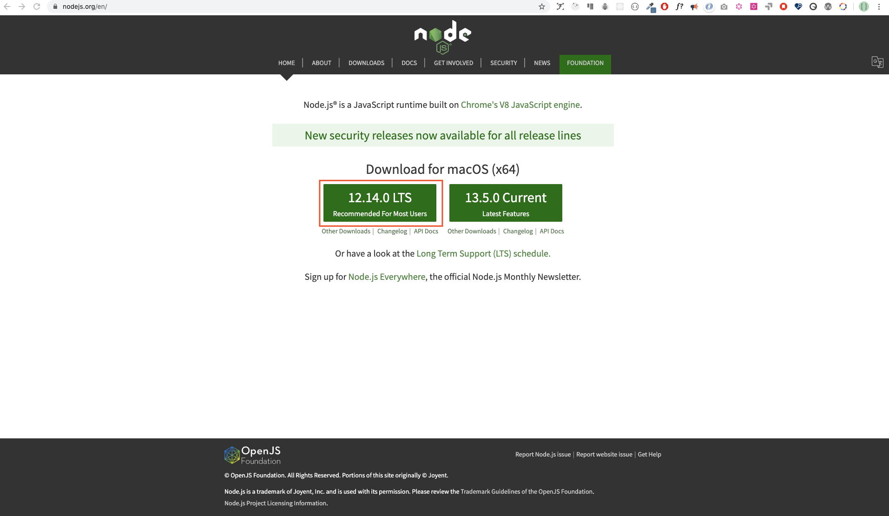
Setelah diunduh, tinggal klik dua kali dan instal deh.
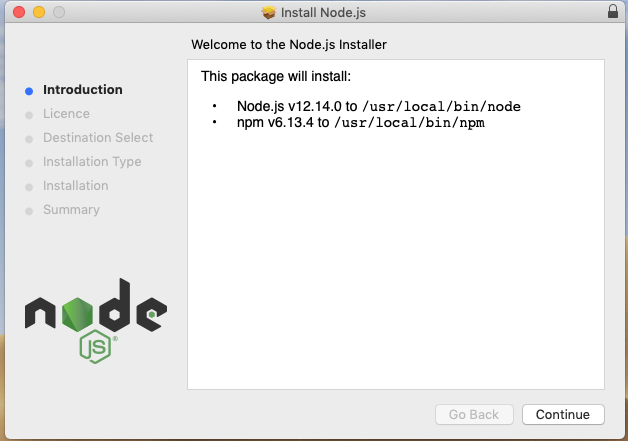
Kita bisa cek apakah Node udah keinstal di mesin lokal kita dengan buka terminal atau command prompt.
asabeneh $ node -v
v12.14.0
Waktu bikin tutorial ini gue pake Node versi 12.14.0, tapi sekarang versi Node.js yang direkomendasiin buat diunduh adalah v14.17.6. Pas kamu baca materi ini mungkin versi Node.js kamu udah lebih tinggi lagi.
Browser
Ada banyak browser di luar sana sih. Tapi gue rekomen banget pake Google Chrome.
Menginstal Google Chrome
Instal Google Chrome dulu ya kalau belum punya. Kita bisa nulis kode JavaScript kecil-kecilan di konsol browser, tapi jangan pake konsol browser buat ngembangin aplikasi ya.
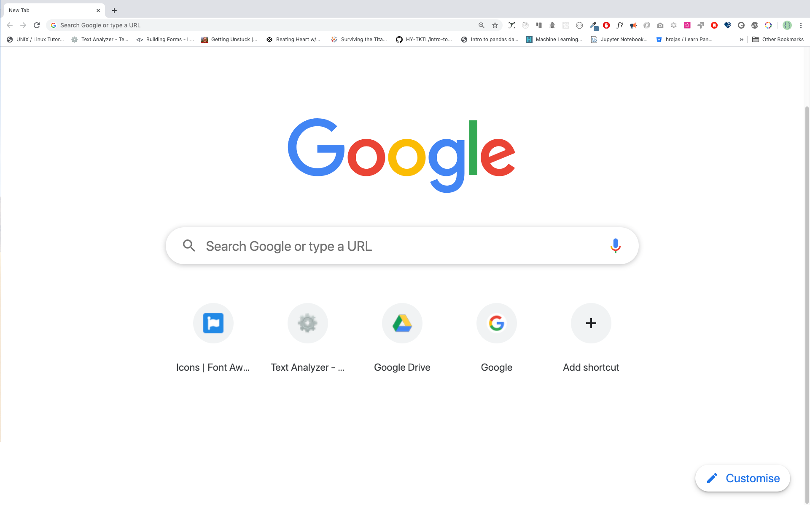
Membuka Konsol Google Chrome
Kamu bisa buka konsol Google Chrome dengan klik tiga titik di pojok kanan atas browser, pilih Alat lainnya -> Alat pengembang atau pake shortcut keyboard. Gue lebih suka pake shortcut sih.
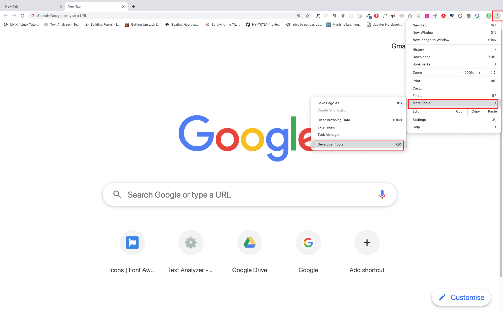
Nih shortcut buat buka konsol Chrome:
Mac
Command+Option+J
Windows/Linux:
Ctl+Shift+J
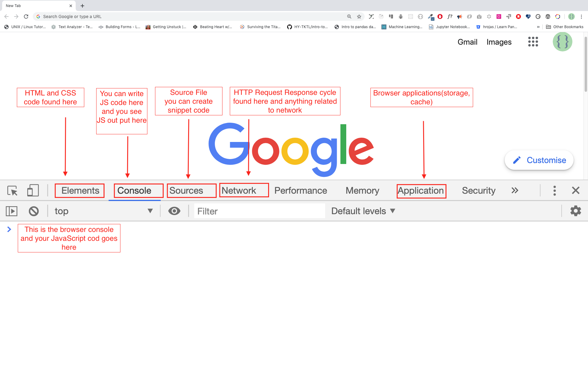
Setelah kamu buka konsol Google Chrome, coba jelajahin tombol-tombol yang udah ditandai ya. Nanti kita bakal banyak ngabisin waktu di Konsol. Konsol ini tempat kode JavaScript kamu jalan. Mesin Google Console V8 bakal ngubah kode JavaScript kamu jadi kode mesin. Yuk kita tulis kode JavaScript pertama di konsol Google Chrome:
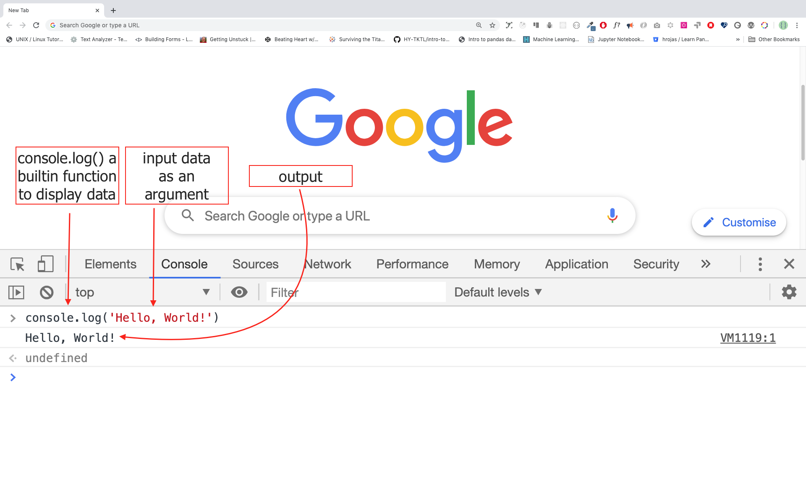
Menulis Kode di Konsol Browser
Kita bisa nulis kode JavaScript apa pun di konsol Google atau konsol browser apa pun. Tapi buat tantangan ini, kita fokus ke konsol Google Chrome aja ya. Buka konsol pake:
Mac
Command+Option+I
Windows:
Ctl+Shift+I
Console.log
Buat nulis kode JavaScript pertama kita, kita pake fungsi bawaan console.log(). Kita kasih argumen sebagai data masukan, dan fungsi itu bakal nampilin keluarannya. Nih kita kasih 'Hello, World' sebagai data masukan atau argumen di fungsi console.log().
console.log('Hello, World!')
Console.log dengan Beberapa Argumen
Fungsi console.log() bisa nerima banyak parameter yang dipisahin pake koma. Sintaksnya gini nih: console.log(param1, param2, param3)
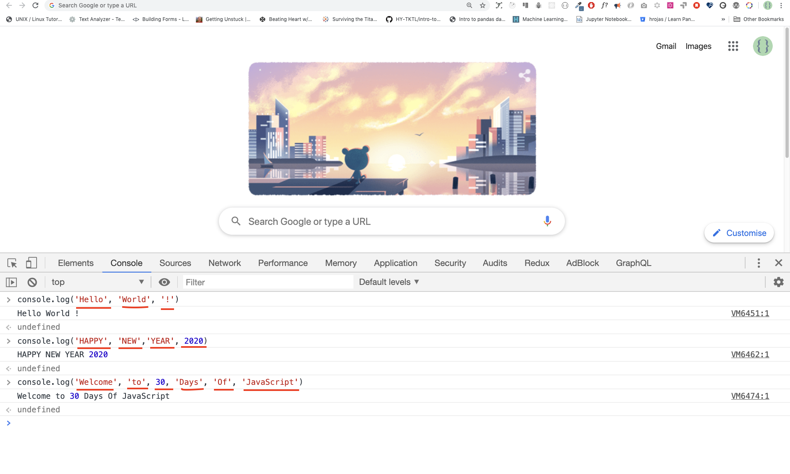
console.log('Hello', 'World', '!')
console.log('HAPPY', 'NEW', 'YEAR', 2020)
console.log('Welcome', 'to', 30, 'Days', 'Of', 'JavaScript')
Nah, seperti yang kamu lihat dari kode di atas, console.log() bisa nerima banyak argumen.
Selamat! Kamu udah nulis kode JavaScript pertama kamu pake console.log(). Keren!
Komentar
Kita bisa nambahin komentar ke kode kita. Komentar itu penting banget buat bikin kode lebih gampang dibaca dan buat ninggalin catatan di kode kita. JavaScript nggak ngeksekusi bagian komentar dari kode kita kok. Di JavaScript, setiap baris teks yang dimulai dengan // adalah komentar, dan apa pun yang diapit kayak gini /* */ juga merupakan komentar.
Contoh: Komentar Satu Baris
// Ini adalah komentar pertama
// Ini adalah komentar kedua
// Saya adalah komentar satu baris
Contoh: Komentar Banyak Baris
/*
Ini adalah komentar banyak baris
Komentar banyak baris dapat mengambil beberapa baris
JavaScript adalah bahasa web
*/
Sintaks
Bahasa pemrograman tuh mirip bahasa manusia. Bahasa Inggris atau bahasa lain pake kata, frasa, kalimat, kalimat majemuk dan lainnya buat nyampein pesan. Arti sintaks dalam bahasa Inggris adalah susunan kata dan frasa buat bikin kalimat yang terbentuk dengan baik dalam suatu bahasa. Definisi teknis sintaks adalah struktur pernyataan dalam bahasa komputer. Setiap bahasa pemrograman punya sintaksnya masing-masing. JavaScript juga punya sintaksnya sendiri. Kalau kita nggak nulis sintaks yang dipahami JavaScript, nanti muncul berbagai jenis error. Kita bakal ngeksplor berbagai jenis error JavaScript nanti. Untuk sekarang, yuk kita lihat error sintaks dulu.
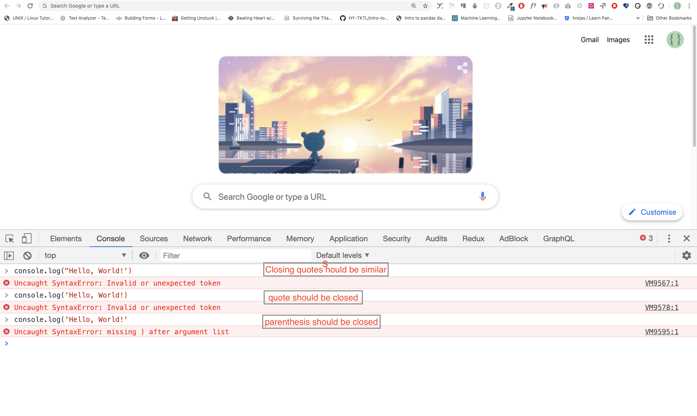
Gue sengaja bikin error nih. Akibatnya, konsol nampilin error sintaks. Sebenernya, pesan errornya informatif banget lho. Dia kasih tahu jenis error apa yang dibuat. Dengan baca panduan umpan balik error, kita bisa perbaiki sintaks dan betulin masalahnya. Proses mengidentifikasi dan menghapus error dari program disebut debugging. Yuk kita betulin errornya:
console.log('Hello, World!')
console.log('Hello, World!')
Sejauh ini, kita udah lihat cara nampilin teks pake console.log(). Kalau kita nyetak teks atau string pake console.log(), teksnya harus ada di dalam tanda kutip tunggal, tanda kutip ganda, atau backtick.
Contoh:
console.log('Hello, World!')
console.log("Hello, World!")
console.log(`Hello, World!`)
Aritmatika
Sekarang, yuk kita latihan lebih banyak nulis kode JavaScript pake console.log() di konsol Google Chrome buat tipe data angka.
Selain teks, kita juga bisa ngelakuin perhitungan matematika pake JavaScript. Yuk kita lakuin perhitungan sederhana berikut.
Kita bisa nulis kode JavaScript di konsol Google Chrome langsung tanpa fungsi console.log(). Tapi ini dimasukin di pendahuluan karena sebagian besar tantangan ini bakal berlangsung di editor teks di mana fungsi ini wajib dipake. Kamu bisa main-main langsung dengan instruksi di konsol ya.
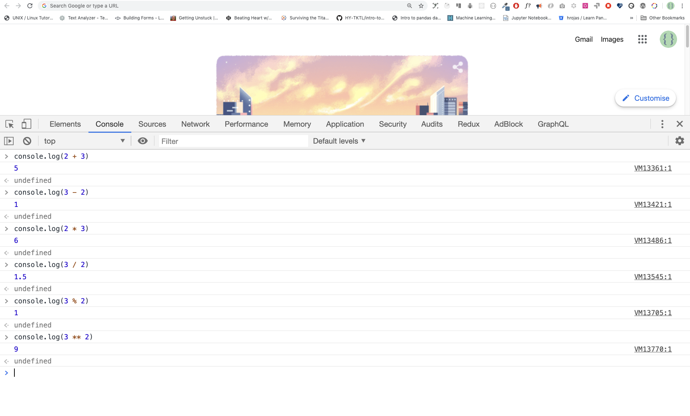
console.log(2 + 3) // Penjumlahan
console.log(3 - 2) // Pengurangan
console.log(2 * 3) // Perkalian
console.log(3 / 2) // Pembagian
console.log(3 % 2) // Modulus - mencari sisa
console.log(3 ** 2) // Eksponensiasi 3 ** 2 == 3 * 3
Editor Kode
Kita bisa nulis kode di konsol browser sih, tapi nggak cocok buat proyek yang lebih gede. Di lingkungan kerja nyata, developer pake berbagai editor kode buat nulis kode mereka. Dalam tantangan JavaScript 30 hari ini, kita bakal pake Visual Studio Code.
Menginstal Visual Studio Code
Visual Studio Code itu editor teks open-source yang populer banget. Gue rekomen banget buat ngunduh Visual Studio Code, tapi kalau kamu lebih suka editor lain, santuy aja pake yang kamu punya.
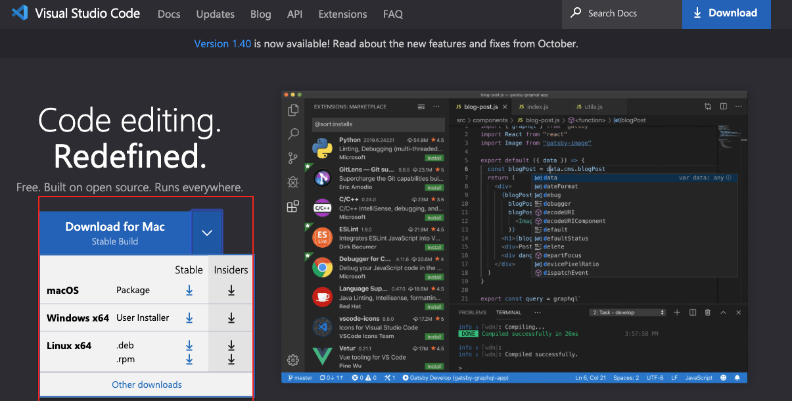
Kalau udah keinstal Visual Studio Code, gaskeun mulai pake.
Cara Menggunakan Visual Studio Code
Buka Visual Studio Code dengan klik dua kali ikonnya. Begitu dibuka, kamu bakal dapet antarmuka kayak gini nih. Coba eksplor ikon-ikon yang udah dikasih label ya.
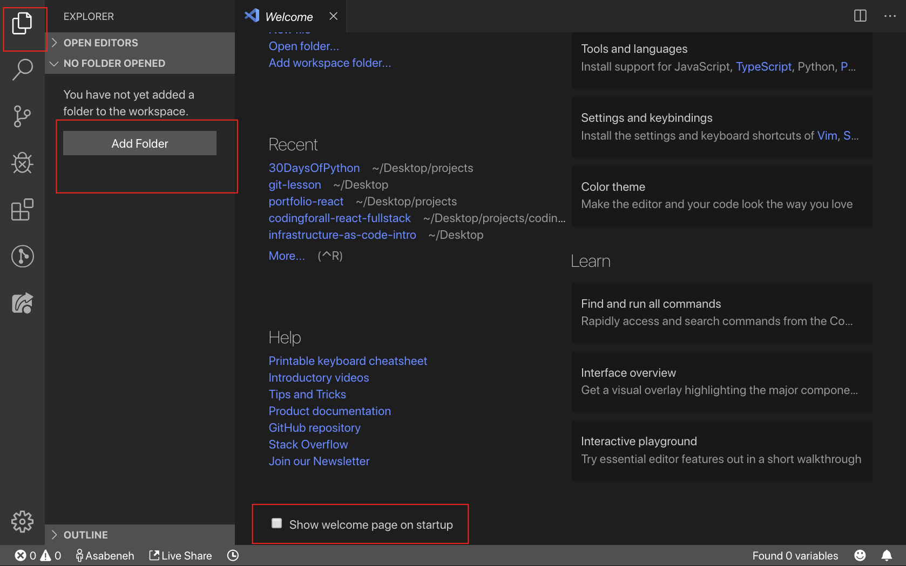
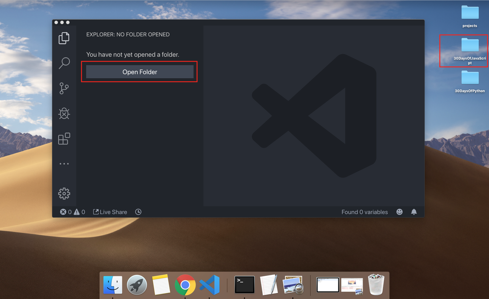
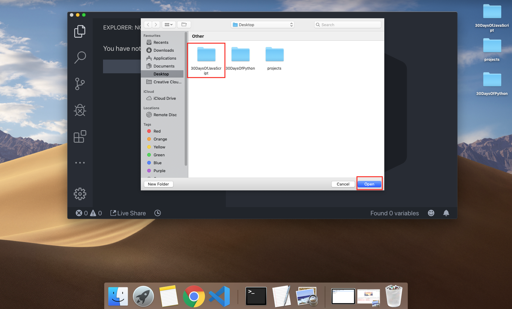
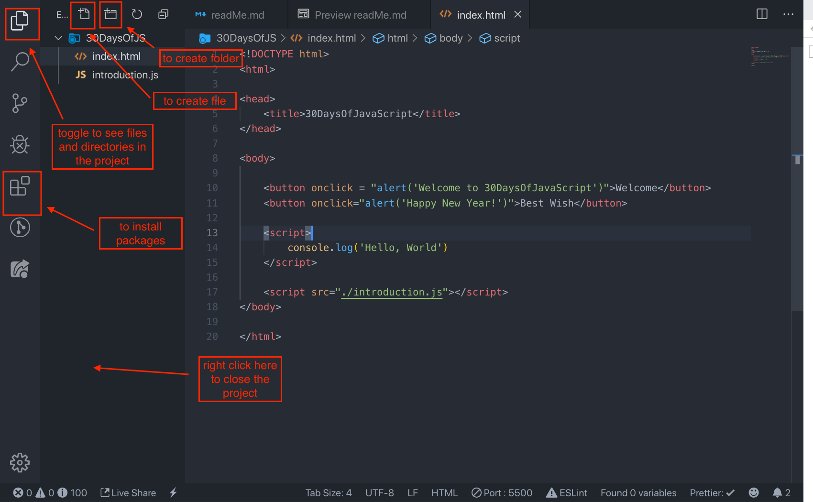
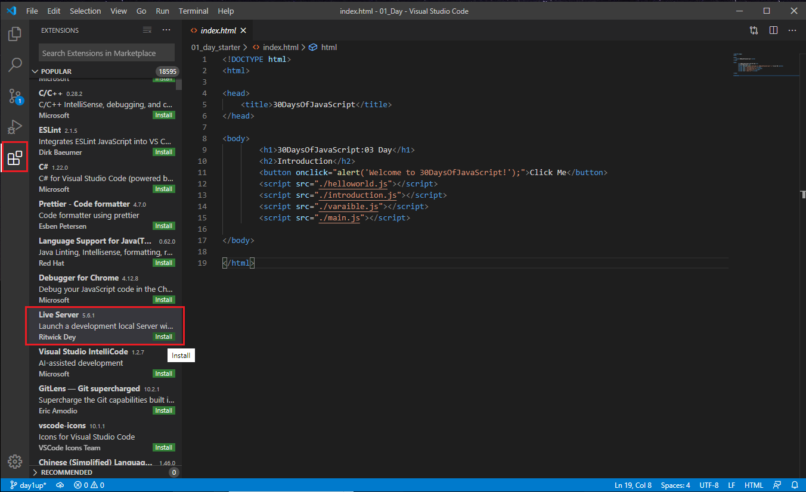
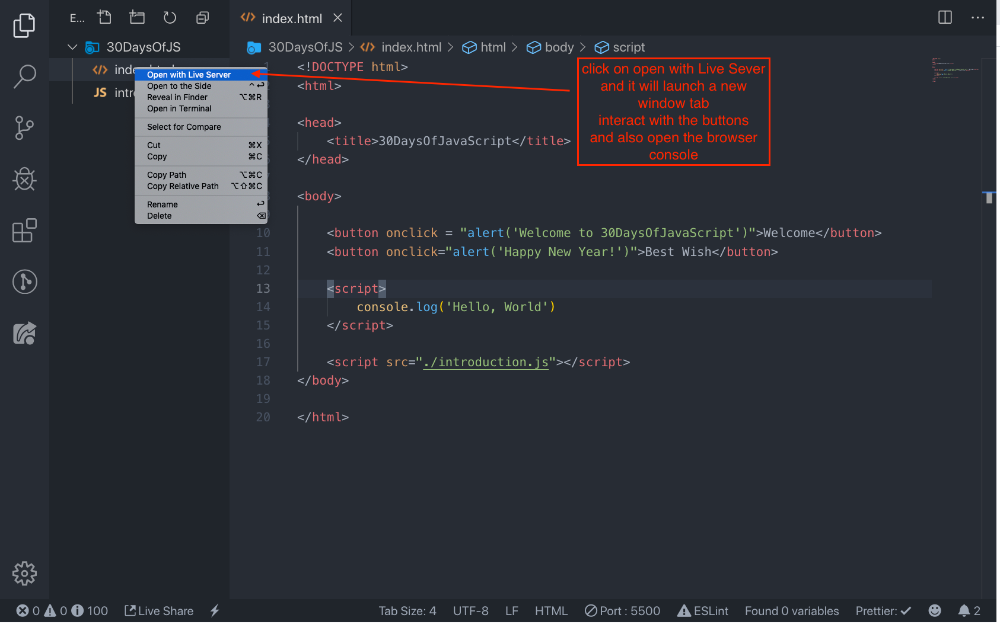
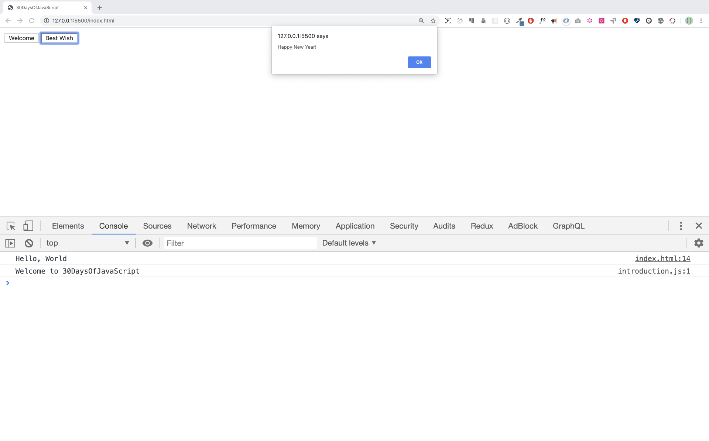
Menambahkan JavaScript ke Halaman Web
JavaScript bisa ditambahin ke halaman web dengan tiga cara berbeda nih:
- Inline script
- Internal script
- External script
- Multiple External scripts
Bagian berikut nunjukin berbagai cara nambahin kode JavaScript ke halaman web kamu.
Inline Script
Bikin folder proyek di desktop kamu atau di lokasi mana pun, kasih nama 30DaysOfJS dan bikin file index.html di folder proyek itu. Terus tempelin kode berikut dan buka di browser, misalnya Chrome.
<!DOCTYPE html>
<html lang="en">
<head>
<title>30DaysOfScript:Inline Script</title>
</head>
<body>
<button onclick="alert('Welcome to 30DaysOfJavaScript!')">Click Me</button>
</body>
</html>
Nah, kamu baru aja nulis inline script pertama kamu. Kita bisa bikin pesan peringatan pop up pake fungsi bawaan alert().
Internal Script
Internal script bisa ditulis di head atau body, tapi lebih disaranin di body dokumen HTML.
Yuk kita tulis di bagian head halaman dulu.
<!DOCTYPE html>
<html lang="en">
<head>
<title>30DaysOfScript:Internal Script</title>
<script>
console.log('Welcome to 30DaysOfJavaScript')
</script>
</head>
<body></body>
</html>
Ini cara kita nulis internal script biasanya. Nulis kode JavaScript di bagian body tuh opsi yang paling direkomendasiin. Buka konsol browser buat lihat hasil dari console.log().
<!DOCTYPE html>
<html lang="en">
<head>
<title>30DaysOfScript:Internal Script</title>
</head>
<body>
<button onclick="alert('Welcome to 30DaysOfJavaScript!');">Click Me</button>
<script>
console.log('Welcome to 30DaysOfJavaScript')
</script>
</body>
</html>
Buka konsol browser buat lihat hasil dari console.log().
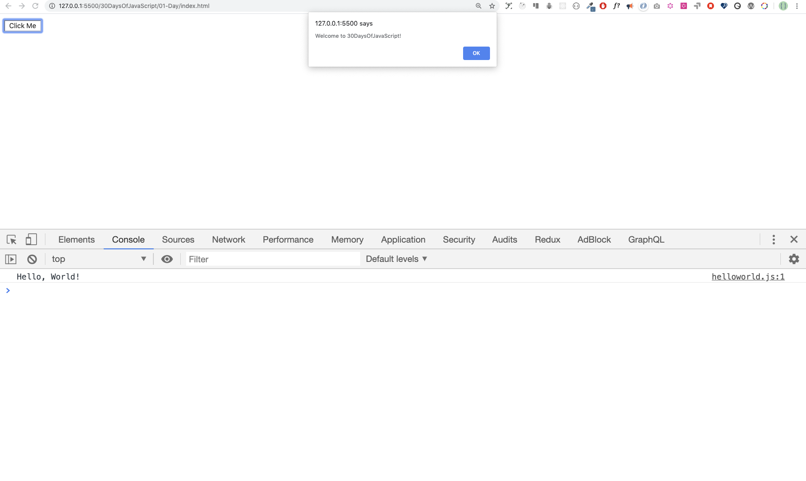
External Script
Mirip kayak internal script, tautan external script bisa di header atau body, tapi lebih disaranin di body. Pertama, kita harus bikin file JavaScript eksternal dengan ekstensi .js. Semua file yang berakhiran .js adalah file JavaScript. Bikin file bernama introduction.js di dalam direktori proyek kamu dan tulis kode berikut, terus tautkan file .js ini di bagian bawah body.
console.log('Welcome to 30DaysOfJavaScript')
External scripts di head:
<!DOCTYPE html>
<html lang="en">
<head>
<title>30DaysOfJavaScript:External script</title>
<script src="introduction.js"></script>
</head>
<body></body>
</html>
External scripts di body:
<!DOCTYPE html>
<html lang="en">
<head>
<title>30DaysOfJavaScript:External script</title>
</head>
<body>
<!-- Tautan eksternal JavaScript bisa di header atau di body -->
<!-- Sebelum tag penutup body adalah tempat yang direkomendasikan untuk meletakkan script JavaScript eksternal -->
<script src="introduction.js"></script>
</body>
</html>
Buka konsol browser buat lihat hasil dari console.log().
Multiple External Scripts
Kita juga bisa nautkan beberapa file JavaScript eksternal ke halaman web lho.
Bikin file helloworld.js di dalam folder 30DaysOfJS dan tulis kode berikut.
console.log('Hello, World!')
<!DOCTYPE html>
<html lang="en">
<head>
<title>Multiple External Scripts</title>
</head>
<body>
<script src="./helloworld.js"></script>
<script src="./introduction.js"></script>
</body>
</html>
File main.js kamu harus ada di bawah semua script lainnya. Ini penting banget buat diinget!
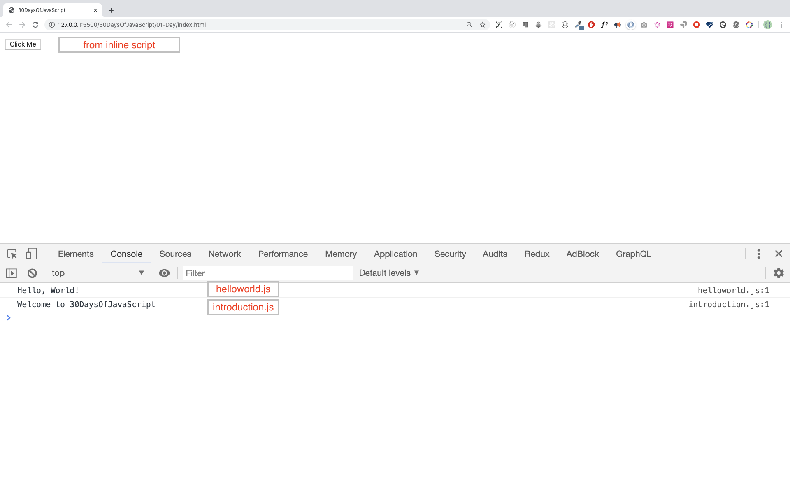
Pengenalan Tipe Data
Di JavaScript dan juga bahasa pemrograman lainnya, ada berbagai jenis tipe data. Nih tipe data primitif JavaScript: String, Number, Boolean, undefined, Null, dan Symbol.
Numbers
- Integers: Bilangan bulat (negatif, nol, dan positif) Contoh: ... -3, -2, -1, 0, 1, 2, 3 ...
- Float-point numbers: Bilangan desimal Contoh ... -3.5, -2.25, -1.0, 0.0, 1.1, 2.2, 3.5 ...
Strings
Kumpulan satu atau lebih karakter di antara dua tanda kutip tunggal, tanda kutip ganda, atau backtick.
Contoh:
'a'
'Asabeneh'
"Asabeneh"
'Finland'
'JavaScript is a beautiful programming language'
'I love teaching'
'I hope you are enjoying the first day'
`We can also create a string using a backtick`
'A string could be just as small as one character or as big as many pages'
'Any data type under a single quote, double quote or backtick is a string'
Booleans
Nilai boolean itu True atau False. Setiap perbandingan ngembaliin nilai boolean, yang bisa true atau false.
Tipe data boolean adalah nilai true atau false.
Contoh:
true // jika lampu menyala, nilainya true
false // jika lampu mati, nilainya false
Undefined
Di JavaScript, kalau kita nggak ngasih nilai ke variabel, nilainya undefined. Selain itu, kalau sebuah fungsi nggak ngembaliin apa pun, dia ngembaliin undefined.
let firstName
console.log(firstName) // undefined, karena belum diberikan nilai
Null
Null di JavaScript artinya nilai kosong.
let emptyValue = null
Memeriksa Tipe Data
Buat ngecek tipe data dari suatu variabel, kita pake operator typeof. Nih lihat contohnya:
console.log(typeof 'Asabeneh') // string
console.log(typeof 5) // number
console.log(typeof true) // boolean
console.log(typeof null) // object type
console.log(typeof undefined) // undefined
Komentar Lagi
Inget ya, ngomentarin di JavaScript mirip kayak bahasa pemrograman lainnya. Komentar penting buat bikin kode kamu lebih gampang dibaca. Ada dua cara ngomentarin:
- Komentar satu baris
- Komentar banyak baris
// mengomentari kode itu sendiri dengan komentar tunggal
// let firstName = 'Asabeneh'; komentar satu baris
// let lastName = 'Yetayeh'; komentar satu baris
Komentar banyak baris:
/*
let location = 'Helsinki';
let age = 100;
let isMarried = true;
Ini adalah komentar banyak baris
*/
Variabel
Variabel itu ibarat wadah buat data. Variabel dipake buat nyimpan data di lokasi memori. Ketika variabel dideklarasikan, lokasi memori dicadangkan. Ketika variabel dikasih nilai (data), ruang memorinya bakal diisi sama data itu. Buat mendeklarasikan variabel, kita pake kata kunci var, let, atau const.
Buat variabel yang nilainya berubah-ubah, kita pake let. Kalau datanya nggak berubah sama sekali, kita pake const. Misalnya nih, PI, nama negara, gravitasi nggak berubah, kita bisa pake const. Kita nggak bakal pake var di tantangan ini dan gue nggak rekomen kamu pake itu. Itu cara deklarasi variabel yang rawan error dan banyak leak. Nanti kita bakal bahas lebih detail tentang var, let, dan const di bagian lain (scope). Untuk sekarang, penjelasan di atas udah cukup ya.
Nama variabel JavaScript yang valid harus ngikutin aturan berikut:
- Nama variabel JavaScript nggak boleh dimulai dengan angka.
- Nama variabel JavaScript nggak ngizinin karakter khusus kecuali tanda dolar dan garis bawah.
- Nama variabel JavaScript ngikutin konvensi camelCase.
- Nama variabel JavaScript nggak boleh punya spasi di antara kata.
Nih contoh variabel JavaScript yang valid:
firstName
lastName
country
city
capitalCity
age
isMarried
first_name
last_name
is_married
capital_city
num1
num_1
_num_1
$num1
year2020
year_2020
Variabel pertama dan kedua di list ngikutin konvensi camelCase. Di materi ini kita bakal pake camelCase (camelWithOneHump). Kita pake CamelCase (CamelWithTwoHump) buat deklarasi kelas, nanti kita bahas tentang kelas dan objek di bagian lain.
Contoh variabel yang nggak valid:
first-name
1_num
num_#_1
Yuk kita deklarasikan variabel dengan tipe data yang beda-beda. Buat mendeklarasikan variabel, kita perlu pake kata kunci let atau const sebelum nama variabel. Setelah nama variabel, kita tulis tanda sama dengan (operator assignment), terus nilainya (data yang ditugaskan).
// Sintaks
let nameOfVariable = value
Nama nameOfVariable itu nama yang nyimpan data nilai yang beda-beda. Lihat di bawah buat contoh detailnya.
Contoh variabel yang dideklarasikan
// Mendeklarasikan variabel berbeda dari tipe data yang berbeda
let firstName = 'Asabeneh' // nama depan seseorang
let lastName = 'Yetayeh' // nama belakang seseorang
let country = 'Finland' // negara
let city = 'Helsinki' // ibu kota
let age = 100 // usia dalam tahun
let isMarried = true
console.log(firstName, lastName, country, city, age, isMarried)
Asabeneh Yetayeh Finland Helsinki 100 true
// Mendeklarasikan variabel dengan nilai angka
let age = 100 // usia dalam tahun
const gravity = 9.81 // gravitasi bumi dalam m/s2
const boilingPoint = 100 // titik didih air, suhu dalam °C
const PI = 3.14 // konstanta geometris
console.log(gravity, boilingPoint, PI)
9.81 100 3.14
// Variabel juga dapat dideklarasikan dalam satu baris yang dipisahkan oleh koma, namun saya merekomendasikan untuk menggunakan baris terpisah agar kode lebih mudah dibaca
let name = 'Asabeneh', job = 'teacher', live = 'Finland'
console.log(name, job, live)
Asabeneh teacher Finland
Ketika kamu jalanin file index.html di folder 01-Day, kamu harusnya dapet ini:
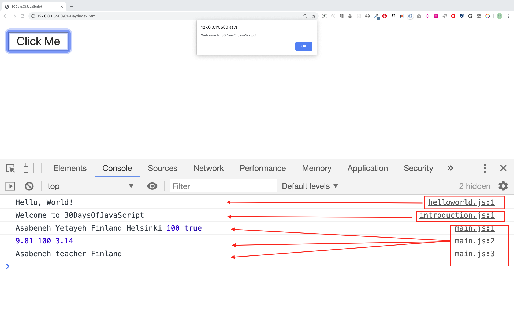
🌕 Kamu luar biasa! Kamu baru aja nyelesein tantangan hari 1 dan kamu udah di jalur menuju kehebatan. Gaskeun sekarang lakuin latihan buat otak dan otot kamu!
💻 Hari 1: Latihan
- Tulis komentar satu baris yang isinya, komentar dapat membuat kode mudah dibaca
- Tulis komentar satu baris lainnya yang isinya, Welcome to 30DaysOfJavaScript
-
Tulis komentar banyak baris yang isinya, komentar dapat membuat kode mudah dibaca, mudah digunakan kembali dan informatif
-
Bikin file variable.js dan deklarasikan variabel serta kasih tipe data string, boolean, undefined, dan null
- Bikin file datatypes.js dan pake operator typeof JavaScript buat ngecek tipe data yang beda-beda. Cek tipe data dari setiap variabel
- Deklarasikan empat variabel tanpa ngasih nilai
- Deklarasikan empat variabel dengan nilai yang dikasih
- Deklarasikan variabel buat nyimpen nama depan, nama belakang, status pernikahan, negara, dan usia kamu dalam beberapa baris
- Deklarasikan variabel buat nyimpen nama depan, nama belakang, status pernikahan, negara, dan usia kamu dalam satu baris
- Deklarasikan dua variabel myAge dan yourAge dan kasih nilai awal, terus tampilin ke konsol browser.
I am 25 years old.
You are 30 years old.
🎉 SELAMAT ! 🎉